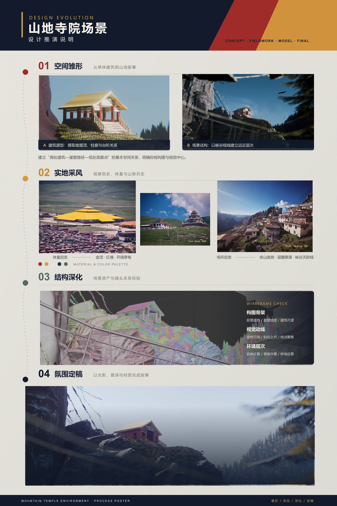
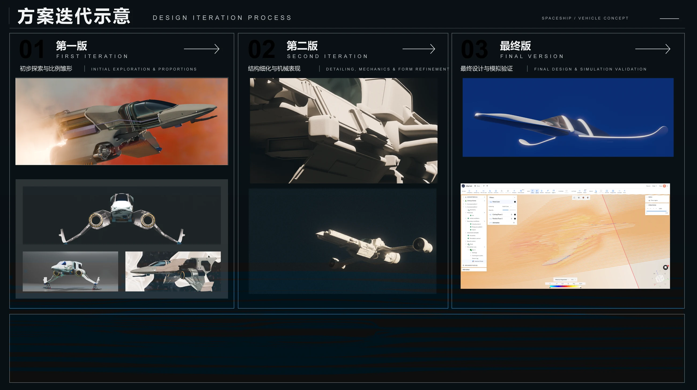
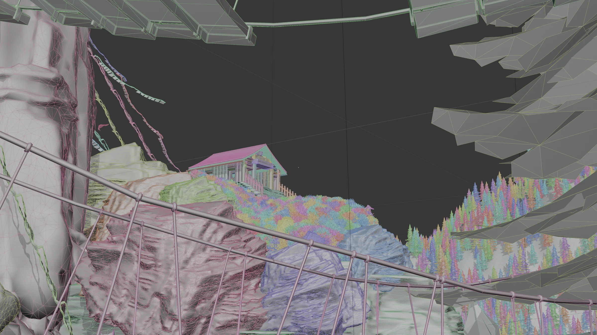
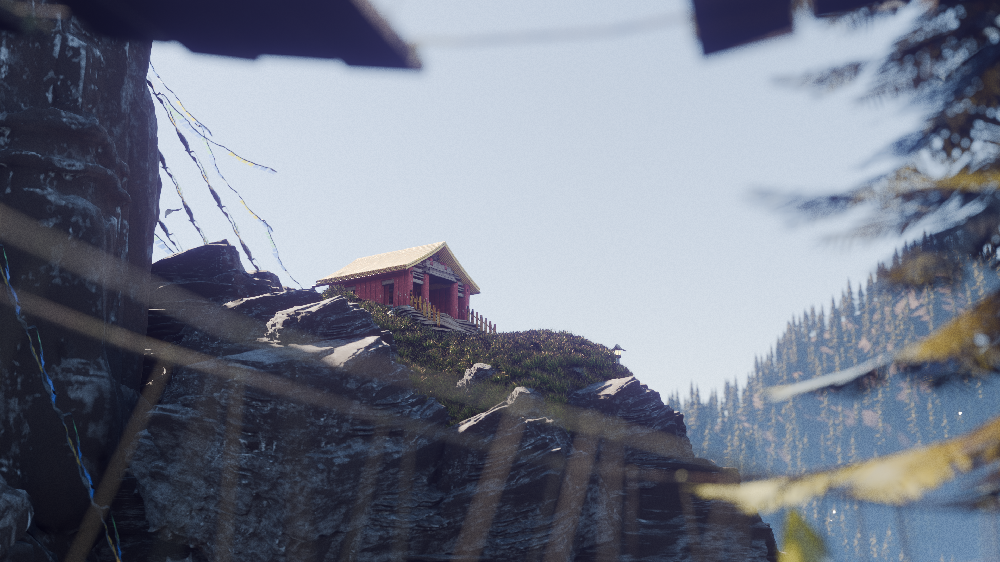
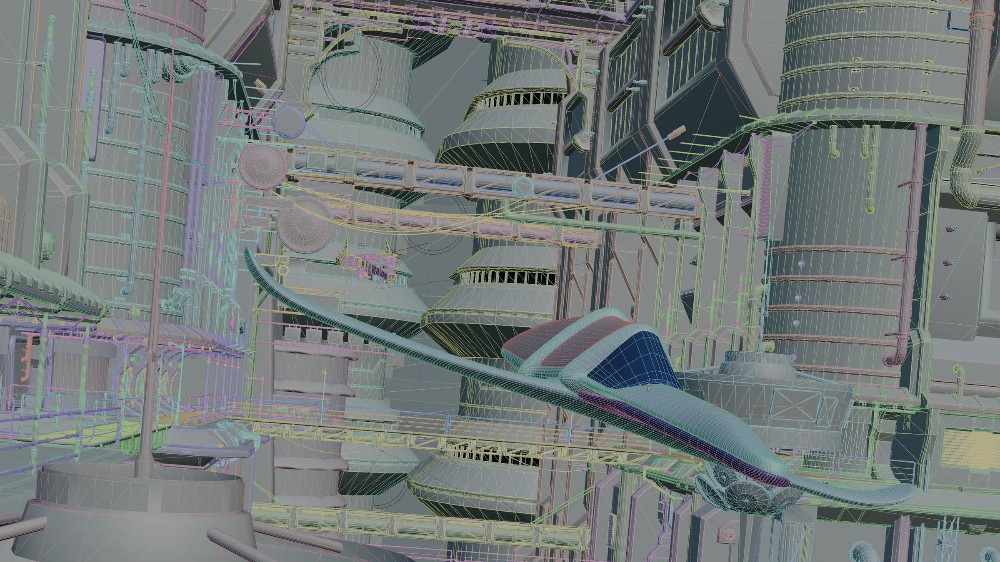
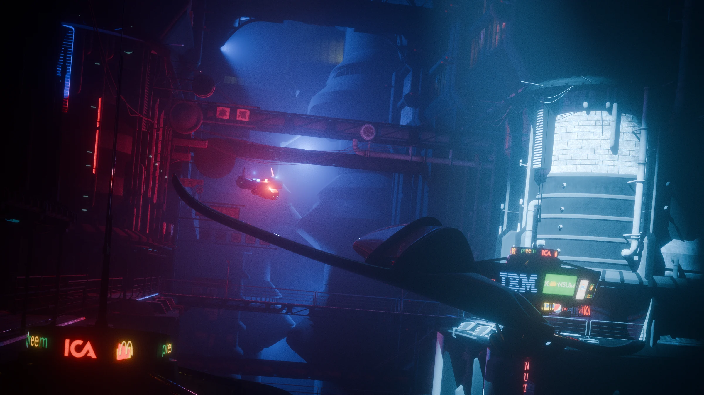
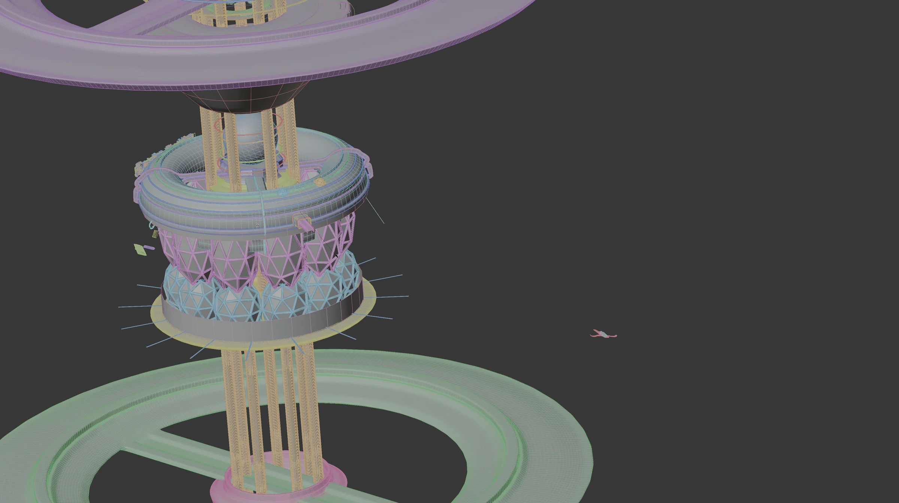
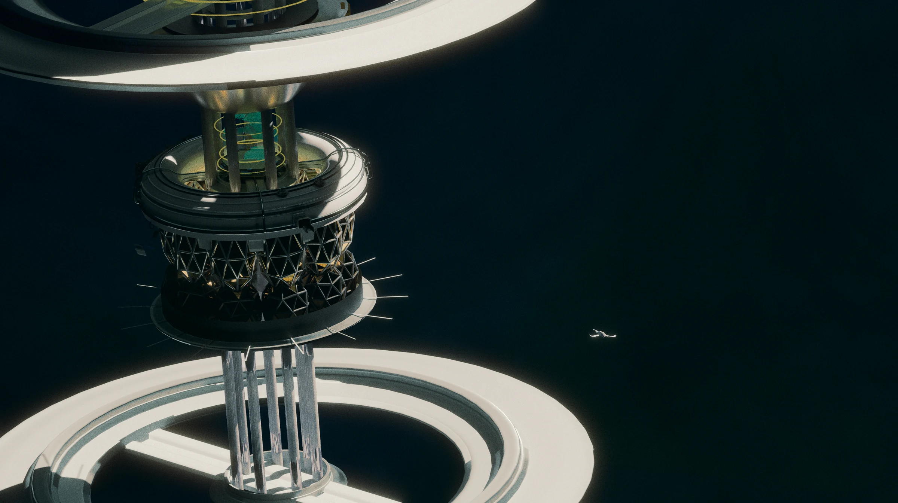

01
山地寺院场景
从建筑原型、实地视觉参考到结构深化，以峡谷天际线与冷雾光影完成场景叙事。
- 建筑与环境资产制作
- 构图、材质与气氛定稿
- 实时场景表达
3D ENVIRONMENT · REAL-TIME ART
从 Blender 资产到 Unity HDRP 实时体验，独立完成场景从构想到可运行 Demo 的完整制作。
SELECTED WORK / 01—02
在构图、材质和灯光之间寻找可感知的空间节奏。

从建筑原型、实地视觉参考到结构深化，以峡谷天际线与冷雾光影完成场景叙事。
从比例探索、机械细化到最终形态与模拟验证，以清晰的版本演进呈现设计判断。

VIEWPORT / FINAL
拖动控制柄，查看结构、材质、灯光与最终氛围之间的变化。






PROFILE / CAPABILITY
可独立完成 Blender 建模、UV、PBR 材质、Unity HDRP 场景搭建、灯光渲染、基础交互、性能优化与 Demo 输出。
关注场景构图、材质质感、灯光氛围与最终实时表现，并持续学习 Shader、程序化与 AI 辅助 3D 工作流。
SKILL MATRIX
Blender · 建模 · UV · 硬表面 · 场景资产
Substance 3D Painter · PBR · Normal · AO
Unity · HDRP · 场景搭建 · 实时渲染 · Demo 输出
HDRI · GI · 体积雾 · 后期调色 · 氛围塑造
基础交互 · Trigger · Shader 基础 · 性能优化
Photoshop · 构图 · 展示设计 · AI 辅助工作流
PROJECT EXPERIENCE
独立完成从 Blender 资产制作到 Unity 实时展示的完整流程。
负责建模、UV、PBR 材质、HDRP 场景搭建、灯光、体积效果与后期调色。
实现第一人称漫游、Trigger 基础交互，并处理 Normal、Z-Fighting、材质与光照问题。
围绕实时运行进行模型、材质与灯光优化，并完成 Windows 可执行 Demo 输出。
CAREER DIRECTION
LOOKING FOR THE NEXT WORLD TO BUILD.
CONTACT
余思洋 Tony Yu